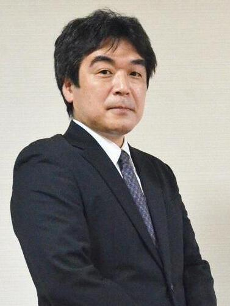
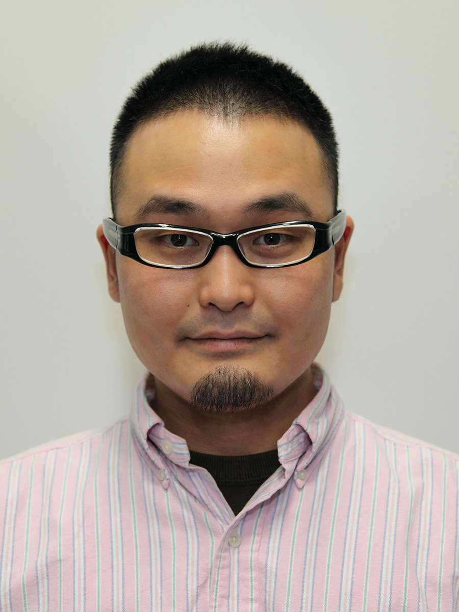
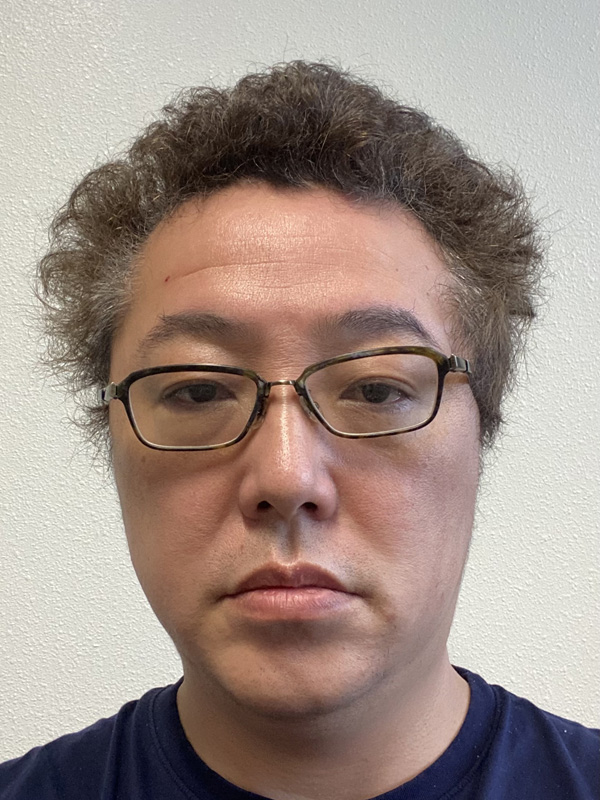
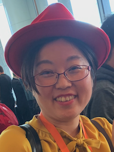
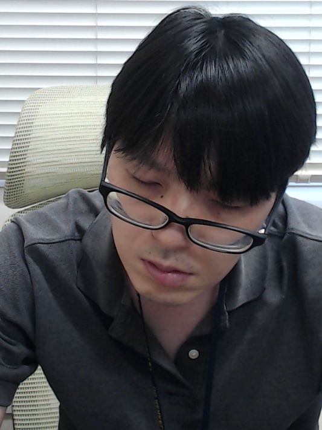
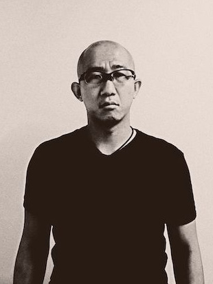
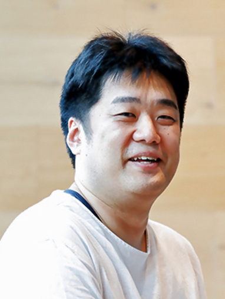
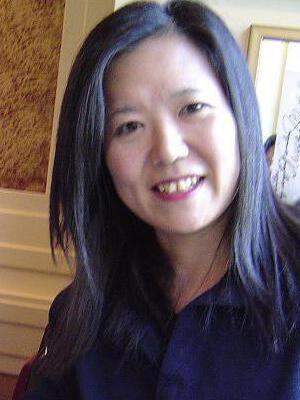

運営組織
実行委員
| フォーラム委員長 | 吉田 尚史（駒沢大学） |
| 実行委員長 | 的野 晃整（産業技術総合研究所） |
| 実行副委員長 | 横山 昌平（東京都立大学） |
| プログラム委員長 | 鈴木 優 (岐阜大学) |
| プログラム副委員長 | |
| （コメンテータ担当） | 金政 泰彦（富士通株式会社） |
| 渡辺 知恵美（筑波技術大学） | |
| プログラム委員 | |
| （プログラム編成担当） | 松原 正樹（筑波大学） |
| （ポスター担当） | 荒木 徹也（群馬大学） |
| TBD | |
| （表彰担当） | 増田 博亮（株式会社日立製作所） |
| TBD | |
| プログラム編集委員 | 井手 一郎（名古屋大学） |
| 伊藤 貴之（お茶の水女子大学） | |
| 大向 一輝（東京大学） | |
| 片山 薫（東京都立大学） | |
| 神崎 映光（島根大学） | |
| 首藤 一幸（東京工業大学） | |
| 藤原 真二（株式会社日立製作所） | |
| 三島 健（SRA OSS, Inc.） | |
| 吉田 光男（筑波大学） | |
| 中村 聡史（明治大学） | |
| 劉 健全（日本電気株式会社） | |
| 北山 大輔（工学院大学） | |
| 天方 大地（大阪大学） | |
| 若宮 翔子（奈良先端科学技術大学院大学） | |
| 新谷 隆彦（電気通信大学） | |
| 清水 敏之（九州大学） | |
| ローカル共同委員長 & 財務担当 | 山本 祐輔（静岡大学） |
| ローカル共同委員長 & 監査担当 | 駒水 孝裕（名古屋大学） |
| ローカル委員 | |
| （オンライン担当） | 伊藤 寛祥（筑波大学） |
| TBD | |
| （レジストレーション担当） | 義久 智樹（大阪大学） |
| （学生スタッフ担当） | 大島 裕明（兵庫県立大学） |
| TBD | |
| （現地会場担当） | 山本 泰生（静岡大学） |
| 杉浦 健人（名古屋大学） | |
| 産学連携委員長 | 高橋 翼（LINE株式会社） |
| 産学連携副委員長 | 清田陽司（株式会社LIFULL） |
| 幹事 | |
| （Web・出版担当） | 莊司 慶行（青山学院大学） |
| 西口 侑希（富士通株式会社） | |
| （ハラスメント対策担当） | 橋本 隆子（千葉商科大学） |
| （DBSJリエゾン） | 灘本 明代（甲南大学） |
コアメンバ会議
| 吉田 尚史 (駒沢大学) |  | 的野 晃整 (産業技術総合研究所) |  |
| 横山 昌平 (東京都立大学) | 鈴木 優 (岐阜大学) |  | |
| 金政 泰彦 (富士通株式会社) | 
| 渡辺 知恵美 (筑波技術大学) |  |
| 山本 祐輔 (静岡大学) |  | 駒水 孝裕 (名古屋大学) |  |
| 高橋 翼 (LINE株式会社) |  | 灘本 明代 (甲南大学) |  |